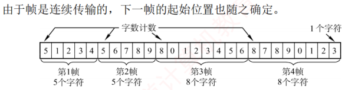
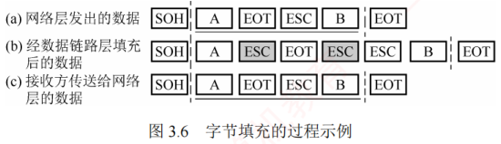
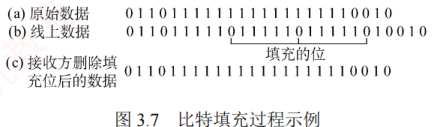

3.2 组帧
对应王道教材 3.2 节（教材 P54–P55）· 本节属于 408 考纲范围
发送方依据特定规则，将网络层递交的分组封装成帧（也称组帧）。数据链路层以帧为单位传输数据，其主要目的是：一旦出错，只需重传出错的帧，而不必重传全部数据，从而提高传输效率。组帧需解决帧定界、帧同步和透明传输等问题。常见的组帧方法主要有以下四种。
组帧时通常既要添加首部，也要添加尾部。原因在于：网络中信息以帧为最小传输单位，接收方必须能准确识别一帧在比特流中的起始与结束位置，否则无法正确解析帧内容。
3.2.1 字符计数法 考点
字符计数法在帧首部设置一个计数字段，用于记录该帧包含的总字节数（包括计数字段自身占用的 1B），如图 3.5 所示。接收方读取该计数值后，即可确定后续数据的长度，从而定位帧的结束位置；由于帧是连续传输的，下一帧的起始位置也随之确定。

当计数字段在传输过程中出错时，接收方将无法正确识别帧的边界，导致收发双方失去同步，可能引发灾难性后果（后续所有帧的边界全部错位）。这也是字符计数法在实际中很少使用的原因。
3.2.2 字节填充法 考点
字节填充法通过特定控制字符实现帧定界。在图 3.6 中，控制字符 SOH 表示帧的起始，EOT 表示帧的结束。为避免数据中出现的 SOH 或 EOT 被误判为帧的定界符，发送方会在这些特殊字符前插入一个 ESC 字符（注意，ESC 是 ASCII 码中的一个单字节控制字符），以实现透明传输。若数据中原本就包含 ESC，则同样在其前再插入一个 ESC。接收方收到 ESC 后，会将其丢弃，并将紧随其后的字符视为普通数据（而非控制字符），从而还原出原始数据。

当帧的数据部分中出现 ESC、EOT 或 SOH 时［见图 3.6(a)］，发送方在每个 ESC、EOT 或 SOH 之前插入一个 ESC 字符［见图 3.6(b)］，接收方处理后恢复原数据［见图 3.6(c)］。
3.2.3 零比特填充法 考点
零比特填充法允许数据帧包含任意数量的比特，并用固定比特串 01111110 作为帧的起始和结束标志，如图 3.7 所示。为防止数据字段中出现与标志相同的比特序列，规则是：
- 发送方：扫描数据时，每遇到 5 个连续的"1"，就在其后自动插入一个"0"，确保数据字段中不会出现 6 个连续的"1"，避免与帧标志混淆；
- 接收方：执行逆操作——每收到 5 个连续的"1"，就自动删除其后的"0"，以恢复原始数据。
早期的 HDLC 协议正是采用这种方法来实现透明传输。零比特填充法易于硬件实现，性能优于字节填充法。

题目：HDLC 协议对 01111100 01111110 组帧后，对应的比特串为？
逐步计算（发送方每遇 5 个连续"1"即在其后填一个"0"）：
- 第一段
01111100：扫描得0 11111 00——出现 5 个连续"1"，先输出011111，紧随其后填充一个"0"，再输出余下的00，得到011111000； - 第二段
01111110：扫描得0 11111 1 0——前 5 个连续"1"后填充一个"0"，再输出余下的10，得到011111010（数据中本有 6 个连续"1"，填充后被拆开，不再构成标志模式）； - 首尾再加上标志 F（01111110），组帧后的数据部分为
011111000 011111010。
对照选项，正确答案为 A（011111000 011111010，填充的"0"已用粗体标出）。
3.2.4 违规编码法
违规编码法利用物理层编码的冗余特性实现帧定界。例如，在曼彻斯特编码中：比特"1"编码为"高-低"电平对，比特"0"编码为"低-高"电平对。而"高-高"或"低-低"电平对在数据比特中是违规的（未被采用），因此可借用这些违规编码序列来标识帧的起始或终止。局域网 IEEE 802 标准采用了这种方法（更多介绍见 3.6 节）。
违规编码法无须任何填充技术即可实现透明传输，但仅适用于采用冗余编码的特殊编码环境。
由于字符计数法对计数字段错误极为敏感，而字节填充法在实现上较为复杂且存在兼容性问题，因此目前更常用的组帧方法是零比特填充法和违规编码法。
| 方法 | 定界手段 | 透明传输实现 | 主要问题/特点 |
|---|---|---|---|
| 字符计数法 | 首部计数字段（含自身总字节数） | 无特殊处理 | 计数出错即失去同步，很少使用 |
| 字节填充法 | 控制字符 SOH/EOT | 特殊字符前插入 ESC 转义 | 实现复杂、存在兼容性问题 |
| 零比特填充法 | 标志比特串 01111110 | 5 个连续"1"后填"0"/删"0" | 易于硬件实现，HDLC 采用 |
| 违规编码法 | 违规电平对（如"高-高"） | 无须填充 | 仅适用于冗余编码环境，IEEE 802 采用 |